일반기계기사 (2011-06-12 기출문제)
1과목: 재료역학
1. 그림과 같이 길이 100cm의 외팔보에 2개의 집중하중이 작용할 때 C점에서의 굽힘모멘트는 몇 N·m인가?
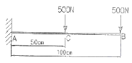
- 250
- 500
- 750
- 1000
(정답률: 40%)

2. 그림에서 A는 고압 증기 터빈, B는 저압 증기 터빈이고 내경 60cm, 외경 65cm인 파이프로 연결되어 있다. 20℃에서 연결하고 운전 중 300℃ 증기가 증공측 내에 흐른다. 이 때 파이프에 발생하는 평균 열응력은 약 몇 MPa인가? (단, E=200GPa, a=1.2×10-5/℃, A, B는 이동되지 않음)
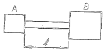
- 2⑤
- 230
- 354
- 672
(정답률: 48%)
3. 그림과 같이 길이 2ℓ인 보에 균일분포 하중 ω가 작용할 때 중앙 지지점을 δ만큼 낮추면 중앙점에서의 반력은? (단, 보의 굽힘강성 EI는 일정하다.)
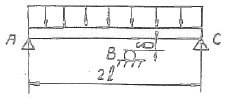
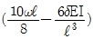
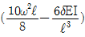
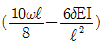
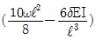
(정답률: 12%)
4. 보의 자중을 무시할 때 그림과 같이 자유단 C에 집중하중 P가 작용할 때 B점에서 처짐 극선의 기울기각 θ을 탄성계수 E, 단면 2차모멘트 I로 나타내면?
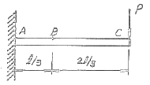
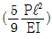
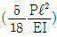
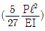
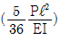
(정답률: 33%)
5. 원형 단면의 길이 2m인 장주가 양단 회전으로 지지되고 25kN의 압축하중을 받을 때 좌굴에 대한 안전계수를 5로 하면 기둥의 직경은 몇 cm로 해야 되겠는가? (단, Euler 공식을 적용하고, 탄성계수는 10GPa이다.)
- 10.08
- 8.08
- 12.08
- 14.08
(정답률: 28%)
6. 다음 그림에서 A지점의 반력 Pw는?
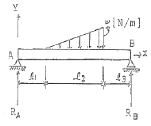
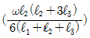
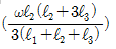
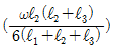
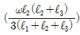
(정답률: 31%)
7. 길이가 L이고 반경이 ro인 원통형의 나사를 끼워 넣을 때 나사의 단위 길이 당 to의 토크가 필요하다. 나사 재질의 전단 탄성계수가 G일 때 나사 끝단 간의 비틀림 회전량은 얼마인가?
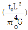
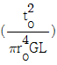
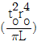
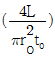
(정답률: 36%)
8. 지름 d=3cm의 환봉이 P=25kN의 전단하중을 받아서 0.00075의 전단 변형률을 발생시켰다. 이 때 재료의 전단탄성계수는 약 몇 GPa인가?
- 87.7
- 97.7
- 47.2
- 57.2
(정답률: 50%)
9. 폭이 2cm이고, 높이가 3cm인 단면을 가진 길이 50cm의 외팔보의 고정단에서 40cm 되는 곳에 800N의 짐층하중을 작용시킬 때 자유단의 처짐은 약 몇 mm인가? (단, 탄성계수는 E=2.1×107N/cm2이다.)
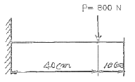
- 5.5
- 4.5
- 3.5
- 2.5
(정답률: 34%)
10. 원형 단면에 전단력 V가 그림과 같이 작용할 때 원주상에 작용하는 전단응력이 0이 되는 지점은?
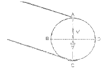
- A, B
- A, B, C, D
- A, C
- B, D
(정답률: 25%)
11. 폭 90mm, 두께 18mm 강판에 세로(종) 방향으로 50kN 전단력이 작용할 때, 전단 탄성계수가 G=80GPa이면 전단 변형률은?
- 1.9×10-4
- 2.6×10-4
- 3.8×10-4
- 4.8×10-4
(정답률: 42%)
12. 바깥지름 40cm, 안지름 20cm의 속이 빈 축은 동일한 단면적을 가지며 같은 재질의 원형측에 비하여 약 몇 배의 비틀림 모멘트에 견딜 수 있는가?
- 0.9배
- 1.2배
- 1.4배
- 1.6배
(정답률: 26%)
13. 지금 3cm인 강축이 회전수 1590rpm으로 26.5kW의 동력을 전달하고 있다. 이 축에 발생하는 최대 전단응력은 약 몇 MPa인가?
- 30
- 40
- 50
- 60
(정답률: 34%)
14. 평면 응력상태의 한 요소에 σx=100MPa, σy=50MPa, τxy=0을 받는 평판에서 평면 내에서 발생하는 최대 전단응력은 몇 MPa인가?
- 25
- 50
- 75
- 0
(정답률: 34%)
15. 그림과 같이 W=200N의 강구가 판 사이에 끼여 있을 때, 접촉점 A에서의 반력 RA는 약 몇 N인가? (단, 접촉점에서의 마찰은 무시한다.)
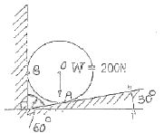
- 231
- 323
- 415
- 502
(정답률: 26%)
16. 그림과 같으 단면의 중림축에 대한 단면 2차모멘트는?
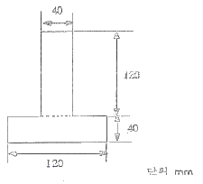
- 21.76×106mm4
- 35.76×106mm4
- 217.6×106mm4
- 357.6×106mm4
(정답률: 32%)
17. 그림과 같은 외팔보에서 허음 굽힘응력 σa=50kN/cm2이라할 때, 최대 하중 P는 약 몇 kN인가? (단, 보의 단면은 10cm×10cm이다.)
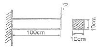
- 110.5
- 100.0
- 95.6
- 83.3
(정답률: 39%)
18. 그림과 같은 단붙이 봉에 인장하중 P가 작용할 때, 축의 지름을 d1 : d2 = 3 : 2로 하면 d1부문에 발생하는 응력 σ1과 d2 부분에 발생하는 응력 σ2의 비는?
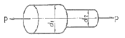
- σ1 : σ2 = 3 : 2
- σ1 : σ2 = 2 : 3
- σ1 : σ2 = 9 : 4
- σ1 : σ2 = 4 : 9
(정답률: 39%)
19. 반경 r, 압력 P, 두께 t인 실린더형 압력용기에서 발생되는 절대 최대 전단응력(3차원 응력상태에서의 최대 전단응력)의 크기는?
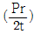
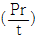
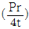
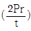
(정답률: 12%)
20. 다음 그림에서 2kN의 힘을 전달하는 키(15×10×60mm)가 있다. 이 키(key)에 생기는 전단응력은 몇 MPa인가?
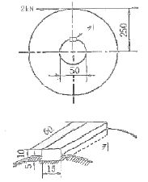
- 66.7
- 44.4
- 22.2
- 12.3
(정답률: 32%)
2과목: 기계열역학
21. 어떤 기체가 5kJ의 열을 받고 0.18kN·m의 일를 하였다. 이때의 내부에너지의 변화량은?
- 3.24kJ
- 4.82kJ
- 5.18kJ
- 6.14kJ
(정답률: 45%)
22. 다음 중 냉동기의 성능계수를 높이는 것으로 틀린 것은?
- 증발기의 온도를 높인다.
- 증발기의 온도를 낮춘다.
- 압축기의 효율을 높인다.
- 증발기와 응축기에서 마찰압력손실을 줄인다.
(정답률: 33%)
23. 공기가 등온과정을 통해 압력이 200kPa, 비체적이 0.02m3/kg인 상태에서 압력이 100kPa인 상태로 팽창하였다. 공기를 이상기체로 가정할 때 시스템이 이 과정에서 한 단위 질량 당 일은 약 얼마인가?
- 1.4 kJ/kg
- 2.0 kJ/kg
- 2.8 kJ/kg
- 8.0 kJ/kg
(정답률: 36%)
24. T-S선도에서 어느 가역 상태변화를 표시하는 곡선과 S축 사이의 면적은 무엇을 표시되는가?
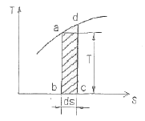
- 힘
- 열량
- 압력
- 비체적
(정답률: 39%)
25. 브레이턴 사이클(Brayton Cycle)은 다음 무슨 사이클에 가장 가까운가?
- 정적연소사이클
- 정압연소사이클
- 등온연소사이클
- 합섬연소사이클
(정답률: 39%)
26. 압력이 일정할 때 공기 5kg을 0℃에서 100℃까지 가열하는데 필요한 열량은 약 몇 kJ인가? (단, 공기비열 Gp(kJ/kg℃)=1.01+0.000079t(℃)이다.)
- 102
- 476
- 490
- 507
(정답률: 41%)
27. 10℃에서 160℃까지의 공기의 평균 정적비열은 0.7315kJ/kg℃이다. 이 온도변화에서 공기 1kg의 내부에너지 변화는?
- 109.7kJ
- 120.6kJ
- 107.1kJ
- 121.7kJ
(정답률: 47%)
28. 비열이 0.475kJ/kg·K인 철 10kg을 20℃에서 80℃로 올리는데 필요한 열량은 몇 kJ인가?
- 222
- 232
- 285
- 315
(정답률: 43%)
29. 피스톤-실린더로 구성된 용기 안에 들어 있는 100kPa, 20℃ 상태의 질소 기체를 가역 단열압축하여 압력이 500kPa이 되었다. 질소의 정적 비열은 0.745kJ/kg·K이고, 비열비는 1.4이다. 질소 1kg당 압축일은 약 얼마인가?
- 102.7 kJ/kg
- 127.5 kJ/kg
- 171.8 kJ/kg
- 240.5 kJ/kg
(정답률: 34%)
30. 0.5MPa, 375℃의 수증기의 정압 비열(kJ/kg·K)은? (단, 0.5MPa, 350℃에서 엔탈피 h=3167.7kJ/kg·K이고, 0.5MPa, 400℃에서 엔탈피 h=3271.7kJ/kg·K이다. 수증기는 이상기체로 가정한다.)
- 1.042
- 2.084
- 4.168
- 8.742
(정답률: 31%)
31. 어떤 냉동사이클의 T-s 선도에 대한 설명으로 틀린 것은?
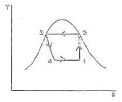
- 1-2 과정 : 가역단열압축
- 2-3 과정 : 등온흡열
- 3-4 과정 : 교축과정
- 4-1 과정 : 증발기에서 과정
(정답률: 36%)
32. -10℃와 30℃ 사이에서 작동되는 냉동기의 최대 성능계수로 적합한 것은?
- 8.8
- 6.6
- 3.3
- 13.2
(정답률: 48%)
33. 열역학 제2법칙은 여러 가지로 서술될 수 있다. 열역학 제2법칙에 대한 설명 중 잘못된 것은?
- 열을 일로 변환하는 것은 불가능하다.
- 열효율이 100%인 열기관을 만들 수 없다.
- 열은 저온 물체로부터 고온 물체로 자연적으로 전달되지 않는다.
- 입력되는 일 없이 작동하는 냉동기를 만들 수 없다.
(정답률: 39%)
34. 용기 안에 있는 유체의 초기 내부에너지는 700kJ이다. 냉각과정 동안 250kJ의 열을 잃고, 용기 내에 설치된 회전날개로 유체에 100kJ의 일을 한다. 최종상태의 유체의 내부에너지는 얼마인가?
- 350kJ
- 450kJ
- 550kJ
- 650kJ
(정답률: 28%)
35. 순수 물질이 기체-액체 평형상태(포화 상태)에 있다. 다음 설명 중 일반적으로 성립하지 않는 것은?
- 각 상의 온도가 같다.
- 각 상의 압력이 같다.
- 각 상의 비체적이 다르다.
- 각 상의 엔탈피가 같다.
(정답률: 35%)
36. 다음 중 이상기체의 교측(스로틀)과정에 대한 사항으로서 틀린 것은?
- 엔탈피 변화가 없다.
- 온도의 변화가 없다.
- 엔트로피의 변화가 없다.
- 비가역 단열과정이다.
(정답률: 28%)
37. 용기에 부착된 차압계로 읽은 압력이 150kPa이고 기압계로 읽은 대기압이 100kPa이다. 용기 안의 절대 압력은?
- 250 kPa
- 150 kPa
- 100 kPa
- 50 kPa
(정답률: 40%)
38. 압축비가 7.5이고 비열비 k=1.4인 오토(Otto)사이클의 열효율은?
- 48.7%
- 51.2%
- 55.3%
- 57.6%
(정답률: 44%)
39. 대형 Brayton 사이클 가스 터빈 동력 발전기의 압축기 입구에서 온도가 300K, 압력은 100kPa이고 압축기 압력비는 10:1이다. 공기의 비열은 1.004kJ/kg·K, 비열비는 1,400이다. 압축기 일은 약 얼마인가?
- 280.3kJ/kg
- 299.7kJ/kg
- 350.1kJ/kg
- 370.5kJ/kg
(정답률: 22%)
40. 폴리트로픽 변화의 관계식 ‘PVn=일정’에 있어서 n이 무한대로 되면 어느 과정이 되는가?
- 정압과정
- 등온과정
- 정적과정
- 단열과정
(정답률: 36%)
3과목: 기계유체역학
41. 다음 중 관내 유동에서 마찰계수 또는 Darcy 마찰계수라고 불리는 무차원량을 표현한 식은?
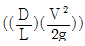
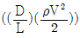
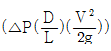
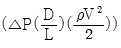
(정답률: 26%)
42. 그림과 같은 관로에 물이 흐를 때 관로 ACD와 관로 ABD 사이에서 발생하는 손실수두는?
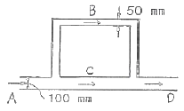
- 관로 ACD와 ABD사이에서 생기는 수도손실은 같다.
- ACD에서 생기는 수두손실이 ABD에서 보다 2배 크다.
- ACD에서 생기는 수두손실이 ABD에서 보다 4배 크다.
- ABD에서 생기는 수두손실이 ACD에서 보다 2배 크다.
(정답률: 25%)
43. 지름이 0.1m인 매우 긴 관의 중앙 부분에서 점성계수 0.001Ns/m2, 밀도 1000kg/m3인 물이 0.1m/s의 속도로 흐를 때 이 부분에서의 유동과 관련하여 맞는 것은?
- 층류 유동
- 난류 유동
- 천이 유동
- 위 조건으로는 알 수 없다.
(정답률: 43%)
44. 그림과 같은 수조에서 파이프를 통하여 흐르는 유량(Q)은 약 몇 m3/s인가? (단, 마찰손실 무시)
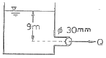
- 9.39×10-3
- 1.25×10-4
- 0.939
- 0.125
(정답률: 47%)
45. I/10로 축소된 수력 발전 댐과 역학적으로 상사한 실제댐이 생성할 수 있는 동력의 비는?
- 1 : 3160
- 1 : 316
- 1 : 31.6
- 1 : 3.16
(정답률: 14%)
46. 지름이 5cm이고 내압이 100Pa(계기압력)일 때, 비눗방울의 표면장력은 몇 N/m인가?
- 2.50
- 1.25
- 0.625
- 0.25
(정답률: 26%)
47. 유선(stream line)에 대한 설명으로 옳은 것은?
- 유체입자의 운동 경로를 유선이라고 한다.
- 유동장에서 속도벡터의 방향과 일치하도록 그려진 연속적인 선이다.
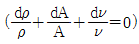
는 유선의 방정식이다.- 항상 [유선=유적선=유액선]인 관계가 성립한다.
(정답률: 38%)
48. 동점성계수가 1×10-6m2/s인 유체가 지름 2cm의 원관 속을 흐르고 있다. 원관 내 유체의 평균속도가 5cm/s라면 마찰계수는 얼마인가?
- 0.064
- 0.64
- 0.032
- 0.32
(정답률: 34%)
49. 다음 중 포텐셜 유동 이론을 적용시킬 수 있는 경우는 어는 것인가?
- 비희전 유동
- 포아제(Poiseuille) 유동
- 경계층 유동
- 점성 유동
(정답률: 15%)
50. 경계층 내의 속도분포가
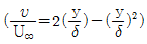
으로 주어졌을 때 경계층의 배제두께(δ1)와 겸계층 두께 (δ)의 관계로 올바른 것은?- δt = δ
- δt = δ/2
- δt = δ/3
- δt = δ/4
(정답률: 30%)
51. 출력이 450kW인 터빈을 통과하는 물이 초당 0.6m3이다. 이때 터빈의 수루는 약 몇 m인가? (단, 터빈의 효율은 87%이다.)
- 88
- 78
- 67
- 11
(정답률: 31%)
52. 물속에 피토관을 삽입하여 압력을 측정하였더니 정체압이 128kPa, 정압이 120kPa이었다. 이 위치에서의 유속은 몇 m/s 인가? (단, 물의 밀도는 1000kg/m3이다.)
- 1
- 2
- 4
- 8
(정답률: 36%)
53. 어떤 물체의 속도가 원래속도의 2배가 되었을 때 항력계수가 1/2로 줄었다면 이 물체가 받는 저항은 원래 저항의 몇 배인가?
- 1/2배
- 4배
- 1.414배
- 2배
(정답률: 36%)
54. 물속에서 체적이 0.02m3인 물체의 무게를 측정하였을 때 120N이었다. 이 물체의 공기 중에서의 무게는 몇 N인가?
- 120
- 196
- 294
- 316
(정답률: 26%)
55. 지름이 각각 10cm와 20cm인 관이 서로 연결되어 있다. 비압축성 유동이라 가정하면 20cm 관속의 평균유속이 2.4m/s일 때 10cm 관내의 평균속도는 약 몇 m/s인가?
- 0.96
- 9.6
- 0.7
- 7.2
(정답률: 38%)
56. 액체 속에 잠겨진 곡면에 작용하는 액체의 압력에 의한 수평력은 어느 것과 같은가?
- 곡면에 작용하는 힘과 같다.
- 곡면의 상부에 채워진 유체의 무게와 같다.
- 곡명을 수직 평판에 투상시켰을 때 생기는 투상면에 작용하는 힘과 같다.
- 곡면을 수평 평면에 투상시켰을 때 생기는 투상면에 작용하는 힘과 같다.
(정답률: 29%)
57. 바닷속 100m까지 잠수한 잠수함이 받는 게이지 압력은 몇 kPa인가? (단, 바닷물의 비중은 1.03이다.)
- 101
- 404
- 1010
- 4040
(정답률: 45%)
58. 그림의 날개가 제트의 방향을 180°바꾼다고 했을 때 제트에 의해서 날개에 작용하는 힘의 크기는 약 몇 N인가? (단, 마찰은 무시한다.)
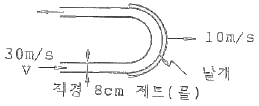
- 2010
- 4020
- 8040
- 6200
(정답률: 27%)
59. 점성계수가 0.2kg/m·s인 유체가 지면과 수평으로 놓인 평판 위를 흐른다. 평판 근방의 속도분포가 v=4.0-100(0.2-y)2일 때 평판면에서의 전단응력은 얼마인가? (단, y[m]는 평판면에 수직방향의 좌표이고, v[m/s]는 평판 근방에서 유체가 흐르는 방향의 속도이다.)
- 80Pa
- 40Pa
- 4Pa
- 8Pa
(정답률: 24%)
60. 다음 중 유체를 연속체(continuum)로 보기가 가장 어려운 경우는?
- 대동맥 내 혈액
- 매우 높은 고도에서의 대기층
- 헬리콥터 날개 주위의 공기
- 자동차 라디에이터 내 냉각수
(정답률: 32%)
4과목: 기계재료 및 유압기기
61. 저 망간강으로 항복점과 인장강도가 큰 것을 무엇이라 하는가?
- 하드필드강
- 쾌식강
- 불변강
- 듀콜강
(정답률: 38%)
62. 다음 중 KS 기호가 STD로 표시되는 강재는?
- 탄소공구강
- 초경공구강
- 다이스강
- 고속도강
(정답률: 52%)
63. 배빗메탈이라고도 하느 베어링용 합금인 화이트 메탈의 주요성분으로 옳은 것은?
- Pb-W-Sn
- Fe-Sn-Cu
- Sn-Sb-Cu
- Zn-Sn-Cr
(정답률: 70%)
64. 탄소강에서 템퍼림(tempering)을 하는 주된 목적으로 가장 적합한 것은?
- 조직을 최대화하기 위해서 행한다.
- 편석을 없애기 위해서 행한다.
- 경도를 높이기 위해서 행한다.
- 스트레인(strain)을 감소시키기 위해서 행한다.
(정답률: 49%)
65. 하나의 액체에서 고체와 다른 종류의 액체를 동시에 형성하는 반응은?
- 초점반응
- 포정반응
- 공정반응
- 편정반응
(정답률: 37%)
66. 켈밋 합금(kelmet alloy)에 대한 사항 중 옳은 것은?
- Pb-Sn합금, 저속 중하중요 베어링합금
- Cu-Pb합금, 고속 고하중요 베어링합금
- Sn-Sb합금, 인쇄용 활자합금
- Zn-Al-Cu합금, 다이캐스팅용 합금
(정답률: 63%)
67. 합금 주철에서 강한 탈산제인 동시에 흑연화를 촉진하며 주철의 성장을 저지하고 내마모성을 향상시키는 원소는?
- 니켈
- 티탄
- 몰리브덴
- 바나듐
(정답률: 45%)
68. 선철의 파면 색깔이 백색을 나타낸 경우 함유된 탄속의 상태는?
- 대부분이 흑연상태로 존재
- 대부분이 산화탄소로 존재
- 탄소함유량이 0.02% 이하로 존재
- 대부분이 Fe3C 금속간 화합물로 존재
(정답률: 45%)
69. 일반적으로 합금의 석출 강화와 관계가 없는 것은?
- 냉각 속도
- 석출 온도
- 과냉도
- 회복
(정답률: 58%)
70. 심냉(sub-zero) 처리의 목적을 바르게 설명한 것은?
- 자경강에 인성을 부여하기 위함
- 담금질 후 시효변형을 방지하기 위해 잔류오스테나이트를 마텐자이트 조직으로 얻기 위함
- 항온 담금질하여 베이나이트 조직을 얻기 위함
- 급열·급냉시 온도 이력현상을 관찰하기 위함
(정답률: 67%)
71. 그림과 같은 유암 기호가 나타내는 명칭은?
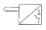
- 리밋 스위치
- 전자 변환기
- 압력 스위치
- 아날로그 변환기
(정답률: 56%)
72. 공기압 장치와 비교하여 유압장치의 일반적인 특징에 대한 설명중 틀린 것은?
- 작은 장치로 큰 힘을 얻을 수 있다.
- 압력에 대한 출력의 응답이 빠르다.
- 인화에 따른 폭발의 위험이 적다.
- 방청과 윤활이 자동적으로 이루어진다.
(정답률: 59%)
73. 다음 중 실린더에 배압이 걸리므로 끌어당기는 힘이 작용해도 자주(自走)할 염려가 없어서 밀링이나 보링머신 등에 사용하는 회로는?
- 싱크로나이즈 회로
- 어뮤물레이터 회로
- 미터 인 회로
- 미터 아웃 회로
(정답률: 48%)
74. 밸브 몸체의 위치에 대한 용어 중 조작력이 작용하지 않는 때의 밸브 음체의 위치를 나타내는 용어는?
- 초기 위치
- 과도 위치
- 노멀 위치
- 플로트 위치
(정답률: 33%)
75. 유압 회로에서 파이프 내에 발생하는 에너지 손실을 줄일 수 있는 방법이 아닌 것은?
- 관의 길이를 길게 한다.
- 관 내부의 표면을 매끄럽게 한다.
- 작동유의 흐름 속도를 줄인다.
- 관의 지름을 크게 한다.
(정답률: 59%)
76. 열 교환기에서 유온을 항상 적당한 온도를 유지하기 위하여 사용되는 오일클러(oil cooler)중 수냉식의 특징 설명으로 틀린 것은?
- 종류로는 흡입형과 토출형이 있다.
- 소형으로 냉각 능력이 크다.
- 10℃ 전후의 온도가 낮은 툴이 사용될 수 있어야 한다.
- 기름 중에 물이 혼입할 우려가 있다.
(정답률: 30%)
77. 어큐물레이터의 종류 중 피스톤 형의 특징에 해당하지 않는 것은?
- 현상이 간단하고 구성품이 적다.
- 대형도 제작이 용이하다.
- 측유량을 크게 잡을 수 있다.
- 유실에 가스 침입의 염려가 없다.
(정답률: 54%)
78. 일정한 유량(Q) 및 유속(V)으로 유체가 흐르고 있는 관의 지름 D를 5D로 크게 하면 유속은 어떻게 변화하는가?
- 1/5V로 줄어든다
- 25V로 늘어난다.
- 5V로 늘어난다.
- 1/25V로 줄어든다
(정답률: 52%)
79. 토출압력이 6.86MPa, 토출량은 4.5×104cm3/min, 회전수가 1000rpm인 유압 펌프의 소비 동력이 7.5kW일 때, 펌프의 전효율은 약 몇 %인가?
- 58
- 69
- 78
- 89
(정답률: 47%)
80. 유압모터의 종류가 아닌 것은?
- 기어 모터
- 베인 모터
- 회전피스톤 모터
- 나사 모터
(정답률: 69%)
5과목: 기계제작법 및 기계동력학
81. 노즈 반지름이 있는 바이트로 선삭 할 때 가공 면의 이론적 표면 거칠기를 나타내는 것은? (단, f는 이송, R은 공구의 날 끝 반지름이다.)
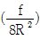
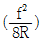
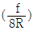
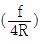
(정답률: 36%)
82. 구성인선(built-up edge)의 방지책에 대한 설명으로 틀린 것은?
- 경사각(rake angle)을 크게 한다.
- 절삭 깊이를 크게 한다.
- 윤활성이 좋은 절삭유를 사용한다.
- 절삭속도를 크게 한다.
(정답률: 60%)
83. 담금질한 강을 상온 이하의 적당한 온도로 냉각시켜 잔류 오스테나이트를 마텐자이트 조직으로 변화시키는 것을 목적으로 하는 열처리 방법은?
- 심냉 처리
- 가공 경화법 처리
- 가스 침타법 처리
- 석출 경화법 처리
(정답률: 63%)
84. 만네스만(Mannesmann) 제관법은 다음 중 어느 제관법에 속하는가?
- 단접관법
- 응접관법
- 천공법
- 오므리기법
(정답률: 49%)
85. 두께 1.5mm인 연질 탄소 강판에 ø3.2mm의 구멍을 펀칭할 때 전단력은 약 몇 N인가? (단, 전단저항력 τ=250N/mm2이다.)
- 3770
- 4852
- 2893
- 6568
(정답률: 52%)
86. 다음 중 박스 지그(box jig)를 사용해야 하는 경우로 가장 가까운 것은?
- 밀링머신에서 헬리컬기어를 가공하는 경우
- 선반에서 테이퍼를 가공하는 경우
- 드릴링에서 대량 생산하는 경우
- 내면 연삭가공을 하는 경우
(정답률: 36%)
87. 가스 용접에서 응제를 사용하는 이유는?
- 침탄이나 질화 작용을 촉진시키기 위하여
- 응접 중 산화물 등의 유해물의 제거를 위하여
- 응접부의 기공을 확대하여 조직을 치밀히 하기 위하여
- 응접 과정에서의 슬래그 발생을 방지하기 위하여
(정답률: 31%)
88. “WA 46 H 8 V”라고 표시된 연삭숫들에서 H는 무엇을 나타내는가?
- 숫들입자의 재질
- 조직
- 결합도
- 임도
(정답률: 40%)
89. 열간기공에 대한 설명으로 가장 적합한 것은?
- 재결점온도 이상에서 가공하는 것
- 용융온도 이상에서 가공하는 것
- 템퍼링온도 이상에서 가공하는 것
- 어닐링온도 이상에서 가공하는 것
(정답률: 60%)
90. 측정기의 구조상에서 일어나는 오차로서 눈금 또는 피치의 불균형이나 마찰, 측정압 등의 변압 등에 의해 발생하는 오차는?
- 불합리 오차
- 기기 오차
- 개인 오차
- 우연 오차
(정답률: 60%)
91. 그림과 같이 길이가 L이고 질량을 무시할 수 있는 강체로 된 보 AB의 A점은 마찰없는 힌지(HINGE)로 지지되어 있고 B점에는 질량m이 붙어 있다. 보의 가운데 점 C에 스프링 상수 k1인 스프링이 달려 있을 때 이 진동계의 운동 방정식을 mx+kx=0라고 놓으면 k의 값은?
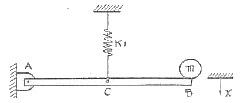
- k=k1
- k=2k1
- k=k1/2
- k=k1/4
(정답률: 10%)
92. 다음 그림과 같이 질량과 바닥면 사이에 건마찰력(dry-friction force)에 의한 감쇠가 작용하는 시스템이 있다. 질량을 중립 위치에서 조금 당겼다가 가만히 놓아주고 그 운동을 관찰하였다. 틀리게 설명된 것은?
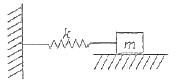
- 클롱(Coulomb)감쇠라고도 하며 점성강쇠의 경우와는 달리 운동방정식은 비선형이다.
- 마찰력이 없어도 시스템의 고유진동수는 변하지 않는다.
- 유한한 시간 내에 질량은 정지하게 되면, 항상 처음의 중립위치에서 정지한다.
- 진폭은 시간이 지남에 따라 선형적으로 감소한다.
(정답률: 28%)
93. 1단 로켓이 지표면에서 정지 상태로부터 수직으로 발사되었다. 로켓의 초기 전체질량은 5000kg이고 적재 연료량은 3600kg이며, 연료의 연소율(b=60kg/s)과 로켓에 대한 연료의 분사속도(v=1000m/s)는 일정하다. 발사 10초 후의 로켓의 속도는 약 몇 m/s인가? (단, 중력 및 공기저항 효과는 무시한다.)
- 98.1
- 127.8
- 136.6
- 157.8
(정답률: 8%)
94. 감쇠비 ζ가 일정할 때 전달률을 1보다 작게 하려면 진동수비는 얼마의 크기를 가지고 있어야 하는가?
- 0
- 1보다 작아야 한다.
- 1
- √2보다 커야한다.
(정답률: 40%)
95. 전체 무게가 3000N인 자동차가 60km/h의 속도로 평지를 달리고 있을 때 브레이크를 밟았다. 이 자동차가 정치하는데 소요되는 시간은 약 몇 초인가? (단, 브레이크의 제동력은 500N이다.)
- 18.5
- 30.4
- 6.3
- 10.2
(정답률: 32%)
96. 그림과 같이 막대 AB가 양쪽 벽면을 따라 움직인다. A가 8m/s의 일정한 속도로 오른쪽으로 2m 이동하여 C점에 도달한 순간, B의 가속도의 크기는?
- 10.3m/s2
- 12.4m/s2
- 14.7m/s2
- 16.6m/s2
(정답률: 5%)
97. 물체의 위치 x가 x=6t2-t3[m]로 주어졌을 때 최대 속도의 크기는 몇 m/s인가? (단, 시간의 단위는 초이다.)
- 10
- 12
- 14
- 16
(정답률: 40%)
98. 10kg의 상자가 초기속도 15m/s로 30°의 경사면 위로 올라간다. 상자와 경사면 사이의 운동 마찰계수가 0.15일 때 상자가 올라갈 수 있는 최대거리 x는 몇 m인가?
- 13.7
- 15.7
- 18.2
- 21.8
(정답률: 29%)
99. 반지름이 a인 디스크가 고정되어 있는 수평한 평면 위를 미끄럼 없이 구르고 있다. 질량중심 G는 디스크의 기하학적 중심에 위치하며 디스크의 G점에 대한 질량관성 모멘트는 ma2/2이다. 총 운동에너지는?
(정답률: 14%)
100. 조화운동을 하고 있는 어느 기계부품의 최대 변위는 0.2cm, 최대 가속도는 1.8cm/s2이라고 한다. 이 기계부품의 주기는?
- 0.33s
- 2.09s
- 3.00s
- 18.8s
(정답률: 27%)